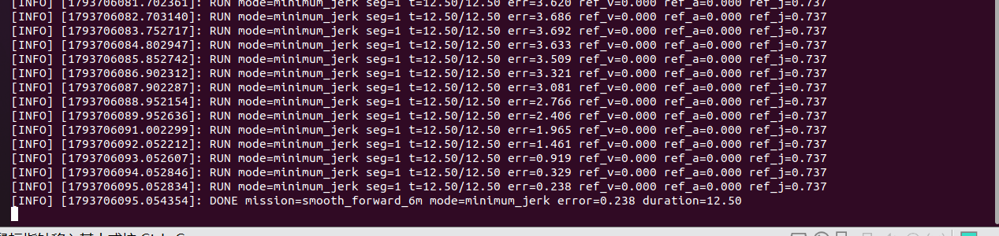
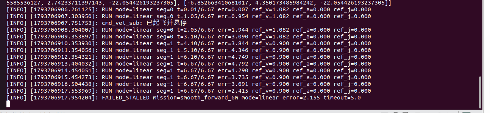
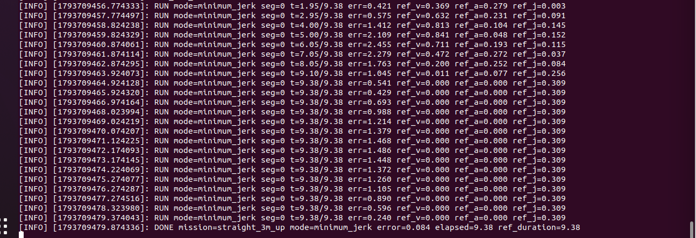

无人机最小加加速度轨迹生成与跟踪
本实验在 OpenHUTB/CarlaAir 中比较五次多项式轨迹参考和普通线性参考，并使用同一套 速度跟踪控制器执行多段飞行。
源码位置：src/air/uav_minimum_jerk_tracking/
1. 实验目标
- 按航点生成分段五次轨迹；位置、速度、加速度连续，每段内 jerk 连续， 段间允许跳变；
- 根据最大速度和最大加速度自动计算每段轨迹时长；
- 用参考速度前馈和位置反馈跟踪轨迹；
- 与线性轨迹比较跟踪误差和运动平滑性；
- 在 OpenHUTB 中记录参考轨迹、实际轨迹和 CSV 数据。
2. 系统结构
OpenHUTB / AirSim
│ /uav/odom
▼
carlair_ros_bridge
▼
uav_minimum_jerk_tracking
│ 五次轨迹 + 跟踪控制
▼
/uav/cmd_vel（世界 ENU 速度）
▼
carlair_ros_bridge ──► 无人机
桥接必须以 body_frame:=false 启动，否则本模块输出的世界 ENU 速度会被错误地
解释为机体系速度。
3. 五次最小加加速度
对一段从 到 、时长 的轨迹，引入 ：
p = p0 + Δp(10s³ - 15s⁴ + 6s⁵)
v = Δp(30s² - 60s³ + 30s⁴) / T
a = Δp(60s - 180s² + 120s³) / T²
j = Δp(60 - 360s + 360s²) / T³
该多项式在起止点同时满足零速度和零加速度。轨迹时长分别受以下峰值约束：
v_peak = 1.875 · distance / T
a_peak = 5.7735 · distance / T²
模块取满足速度与加速度约束的最短时长，并允许通过 min_segment_duration
设置最小段时长。
4. 跟踪控制
控制器使用参考前馈和 PD 反馈：
v_cmd = v_ref + Kp · (p_ref - p_actual) + Kd · (v_ref - v_actual)
随后对水平/垂直速度、水平/垂直加速度分别限幅。参考位置、速度、加速度和 加加速度会随状态和 CSV 一起发布，便于比较不同轨迹模式。
轨迹结束后若超过 final_wait_timeout 仍未进入 0.35 m 终点容差，节点会输出
FAILED_STALLED 并停止，避免执行器受阻时持续发布相同日志。
odom 超过 odom_timeout_sec 未更新时，节点输出 STALE_ODOM，停止输出速度并
暂停轨迹时钟，避免用旧状态继续推进参考。
5. 线性参考对照
mode:=linear 使用同一组航点和控制器，但参考位置在每段内线性变化。该模式
在段边界存在速度跳变，可作为没有轨迹平滑时的基线。
6. 运行
先启动 Windows 侧 OpenHUTB，进入地图后按 Ctrl+V 切到 AirSim，再在虚拟机
执行：
cd ~/catkin_ws
source /opt/ros/noetic/setup.bash
catkin_make
source devel/setup.bash
roslaunch uav_minimum_jerk_tracking openhutb_test.launch \
host:=<宿主机IP> \
mission:=straight_3m_up \
mode:=minimum_jerk
线性对照：
roslaunch uav_minimum_jerk_tracking openhutb_test.launch \
host:=<宿主机IP> \
mission:=straight_3m_up \
mode:=linear
7. 观察与数据
rostopic echo /uav_minimum_jerk_tracking/status
rostopic hz /uav/odom
rostopic hz /uav/cmd_vel
RViz 中添加两个 Path：
/uav_minimum_jerk_tracking/desired_path/uav_minimum_jerk_tracking/actual_path
CSV 位于：
~/.ros/uav_minimum_jerk_tracking/<mission>_<mode>.csv
8. OpenHUTB 实测结果
测试环境为 OpenHUTB/CarlaAir Town10HD Opt、ROS Noetic、Drone1。
第一轮任务 smooth_forward_6m 的初始数据如下：
| 模式 | 参考时长 | 实测结束时刻 | 最终误差 | 运动段 RMSE | 运动段最大误差 | 结果 |
|---|---|---|---|---|---|---|
| minimum_jerk | 12.50 s | 37.9 s | 0.238 m | 2.023 m | 2.908 m | DONE |
| linear | 6.67 s | 11.67 s | 2.155 m | 3.297 m | 4.995 m | FAILED_STALLED |
参考量峰值：
| 模式 | 速度峰值 | 加速度峰值 | 加加速度峰值 |
|---|---|---|---|
| minimum_jerk | 1.082 m/s | 0.533 m/s² | 0.885 m/s³ |
| linear | 1.082 m/s | 0 | 0 |


线性参考在段边界存在速度跳变，实际机体受速度环和执行器限幅影响出现较大跟踪
滞后；在 final_wait_timeout=5 s 到达时仍未收敛，输出 FAILED_STALLED。
该轮同时受到线性终点速度未归零缺陷的影响，因此只作为初测记录，不作为最终对照
结论。
五次轨迹最终收敛到 0.238 m，但实际收敛时间明显长于 12.5 s 参考时长，说明
当前控制器在 OpenHUTB 的速度执行滞后下仍需继续整定；这一限制没有被隐藏。
修复线性终点速度缺陷并加入速度阻尼、里程计新鲜度保护后，使用更短的
straight_3m_up 做回归。第一次沿用 15 s 最终等待窗时，误差已经收敛到
0.434 m，但仍略高于 0.35 m 容差，因此输出 FAILED_STALLED；从日志可见末段
误差仍从 1.532 m 连续下降。统一等待窗调整为 18 s 后重新运行，无人机在
9.38 s 参考轨迹结束后进入容差并完成稳定判定：
DONE mission=straight_3m_up mode=minimum_jerk error=0.084

该结果验证了修复后控制器在上升 3 m 任务上的最终收敛能力，也说明先前失败是
最终等待窗与速度执行滞后共同造成的边界情况，而不是节点停滞。修复后的
straight_3m_up 线性对照尚未重跑，因此不对两种模式在该短任务上的 RMSE 作
最终结论。
9. AI 使用声明
使用 Codex 辅助需求分析、代码编写、测试和文档整理；作者负责 OpenHUTB 飞行验证、数据采集和最终内容复核。